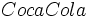

De: La Frikipedia, la enciclopedia extremadamente seria.
De: La Frikipedia, la enciclopedia extremadamente seria. De: La Frikipedia, la enciclopedia extremadamente seria.
| De la serie vehículos de ayer y de hoy: | |||
| Máquina del Tiempo | |||
| |||
| Marca | Hasecorp | ||
| Modelo | Prototipo 1 | ||
| Antigüedad | Es una máquina del tiempo, ¿Como coño quieres que lo sepa? | ||
| Velocidad | Mas que la velocidad de la luz | ||
| Precio | Mas de lo que ganas | ||
| Mano | Los autos no tienen manos | ||
| Combustible que usa | Harwario | ||
| Colores | Blanco y negro | ||
| Tipo | Máquina del Tiempo (¡Duh!) | ||
| Plazas | Una | ||
| ¿Se puede tunear? | Solo ponerle portavasos | ||
| Notas | Solo existen en el futuro, si quieres ir a donde haya ¡Consiguete una Máquina del Tiempo! | ||
La máquina del tiempo es una máquina que permite viajar por el tiempo. Según Hiro Nakamura se inventarán en el siglo CCCIV, o lo que es lo mismo, en el siglo 100110000 (sí, aunque no lo creas, todavía quedará humanidad). Sin embargo, los irresponsables viajeros del tiempo la copiaron tantas veces que las hay en todas las épocas (véase Viajes en el tiempo).
En algún día del Siglo 304 de nuestra jodida querida era, a algún viejo chiflado se le ocurrirá hacer un auto que funcionará como reloj y en vez de gasolina usará .
Resultado: Explotará todo el Laboratorio y el viejo chiflado viajará hasta el siglo XXI donde le venderá el secreto a Museo de Cosas Raras de los EE.UU..
En el Siglo XXII se perderán dos de las 800 máquinas que se guardaban en el museo. Después de tragar muchos liros de historia los expertos frikipédicos han descubierto el destino que han sufrido ( o sufrirán, depende del punto de vista) los ejemplares perdidos.
Una de las máquinas se activará e irá a parar en el garaje de un cíentifico loco adicto a los relojes,Doc. Emmett Brown, en el año 1985. Este la disfrazó de DeLorean y se fue a viajar por el tiempo causando todo tipo de cagadas y líos temporales junto a su asistente Marty McFly.
La historia llegó a oídos de Steven Spielberg, que compró la historia y creó una trilogía de 3 partes llamada Regreso al futuro (BACK TO THE FUTURE) o BTTF para los amigos, aunque Spielberg a confesado ahora que plagió se inspiró mucho en el reconocido largometraje Volver al Futurox. (Ver también: Delorean)
La otra máquina desaparecida también viajará al pasado y caerá en manos del escritor francés Julio Verne que en sus viajes al futuro vió miles de cosas que dejo grabadas en sus inmortales libros. Pero Verne era un adicto al juego y en un casino de las Vegas, apostó su máquina contra una fortuna propiedad del conocido apostador H.G Wells, quién ganó, Verne lo perdió todo y sus libros no volvieron a ser los mismos.
H.G Wells también realizó viajes por el espacio-tiempo que dejó plasmados en sus obras, en especial en la que se títula LA MÁQUINA DEL TIEMPO, una novela que ofrece una visión de cómo se sentía viajando en el tiempo y cómo lucía la máquina.
Ya para el Siglo XX la historia de la máquina y los viajes por el tiempo eran tan populares que sirvieron para miles de películas y libros, mientras que la máquina de Wells permaneció oculta en la casa de Bruce Lee hasta el día de ayer, cuando fue robada por un OVNI que la dejó caer en manos de un fracasado meteorólogo francés (sí, de nuevo) cuyos pronósticos nunca acertaban. Su nombre: Michelle de Notredame, conocido por su nick en el MSN: Nostradamus, quien viajó hasta el pasado y escribió un montón de libros con cosas que sabía que iban a pasar y otras que se inventó, debido a esa alteración en el Orden Espacio Temporal tan grande que el gobierno de los EE.UU del Siglo XXII creará al Escuadrón del Tiempo, un grupo de vagos policías que viajarán por las eras para calmar los errores. Sin embargo en vez de "calmarlos" los empeorarán, hasta tal punto que varios de ellos cogerán datos y cosas importantes del futuro (o presente) para llevarlas al pasado. Hoy sus nombres son conocidos a nivel mundial. Algunos ejemplos: Mozart, Beethoven, Stan Lee, Napoleón, Lenin y George Lucas... entre otros, quienes usarán la tecnología de los Viajes en el tiempo para sus propios fines de lucro y ambiciosos planes.
Nadie sabe con certeza como funciona la máquina del tiempo. Sólo se sabe, como hemos dicho antes, que el modelo original utilizará Coca Cola de combustible y que su motor será un reloj.
Según fuentes no muy confiables, los distintos tipos de máquinas que hay en el mundo se parecen a un auto, a una nevera con ruedas, etc. o según otras versiones (la de Wells para ser exactos) luce como la imagen que se aprecia acá.
Autor(es):